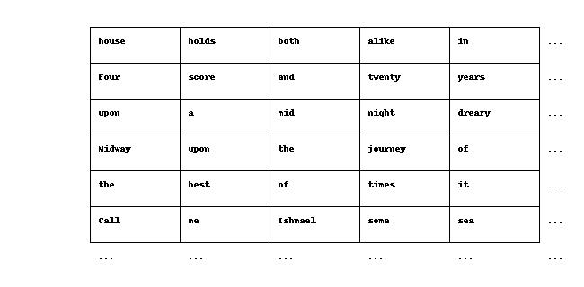
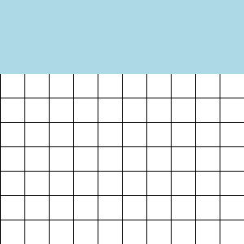
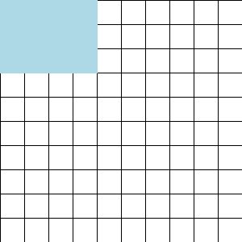

LongCrawl64: A Long-Context Natural-Language Dataset
This article is a pre-release WIP, and will be updated soon.
As part of our broader mission of training language models with ultra-long context, we are releasing a dataset for use in research on architectures and algorithms for long-context modeling. This dataset, which we call LongCrawl64, is available on GitHub. It consists of 6,661,465 pre-tokenized documents, each of which is 65,536 tokens long, for a total token count of 435 billion.
How to download the dataset
The dataset is hosted on a Google Cloud bucket. The easiest way to download it is using gsutil, which can be installed with:
curl https://sdk.cloud.google.com | bash
gcloud initTo download, use:
GSUTIL_PARALLEL_THREAD_COUNT=5 GSUTIL_PARALLEL_PROCESS_COUNT=5 gsutil -m cp -r gs://longcrawl64/ /local/path/Choose threads and processes as appropriate for your system.
How the dataset was constructed
Included in the GitHub repository are the scripts we used to generate this dataset. This is included as a reference for anyone who wants to understand in detail what exactly the dataset consists of, and also will be a useful starting point for anyone who wants to put together a variant.
The starting point for LongCrawl64 is RedPajama-v2, a dataset consisting of all of the Common Crawl scrapes of the public internet. RedPajama-v2 is divided into three partitions, which they call head, middle, and tail. The head & middle partitions come alongside useful pre-computed metrics, such as mean word length, whether each document is a duplicate, etc.
We first use these metrics to filter RedPajama-v2 head & middle, keeping only high-quality1, non-duplicated documents with 16k words or more. We then tokenize each one with OpenAI’s TikToken tokenizer for GPT-2, which uses BPE with a vocabulary size of 50304. We then further discard any documents shorter than 64 kibitokens (KiT).2 LongCrawl64 includes all documents that remain.
Unlike most LLM datasets, LongCrawl64 is not published as raw text. Instead, it is released in an “opinionated” format, after performing further preprocessing steps which make the dataset easy to use for research. This consists of three steps:
- Truncating each entry to be exactly 64 KiT.
- Shuffling the dataset along the document dimension.
- Rolling each document a random amount along the sequence dimension.3
The end result is a 6,661,465 x 65,336 Zarr array of uint16s.4
If we always start at the beginning of each document, we could be misled by structure in the dataset itself; for example, if each document begins with an easy-to-predict subsequence, loss will increase on contexts outside of this window. Rolling solves this issue.
How to use the dataset
The design of LongCrawl64 makes it easy to efficiently load IID minibatches at any context length.
The dataset can be visualized as a rectangle:

When sampling a minibatch, all we need to do is slice a smaller rectangle out from the underlying dataset. Thanks to the preprocessing, we can get minibatches of data of any context length with the statistical properties we desire via a simple iterative scheme.
A visual explanation is easiest. To train with context length 64 KiT, simply iterate through the rows:

To train with context length less than 64 KiT, iterate through the rows and then the columns:

Thanks to the shuffling & rolling, any such rectangle will consist of rows uncorrelated from one another both in content and in position within their respective documents; and, by iterating in column-major order, we also ensure there are no correlations between consecutive minibatches.
Under the hood, data is stored as compressed chunks of 2048 x 2048 tokens (~10Mb each). The iterative loading described above is therefore very efficient, since it performs only contiguous reads on a small number of chunks each time. It also permits reuse between subsequent minibatches via a simple LRU caching mechanism.
One final detail: after tokens have been loaded, they must be converted into a input/target pair for training. We recommend using the loaded data as targets, and constructing the inputs by adding a padding token to the beginning of the sequence and dropping its final element.
Below is a simple dataloader that implements these patterns. Extend or adjust it to meet your needs.
import zarr
import numpy as np
class Dataloader:
"""Configurable dataloader for LongCrawl64."""
def __init__(self, dataset_path, docs_per_batch, context_size):
self.dataset = zarr.open(dataset_path, mode='r')
self.docs_per_batch = docs_per_batch
self.context_size = context_size
# Step properties
self.tokens_per_batch = self.docs_per_batch * self.context_size
# Throw away edges
self.doc_count = (
self.dataset.shape[0] - (self.dataset.shape[0] % self.docs_per_batch))
self.doc_length = (
self.dataset.shape[1] - (self.dataset.shape[1] % self.context_size))
self.dataset_tokens = self.doc_count * self.doc_length
def __len__(self):
return self.dataset_tokens // self.tokens_per_batch
def __getitem__(self, index):
# Identify corner of the rectangle
row_chunks = self.doc_count // self.docs_per_batch
context_idx = index // row_chunks
context_physical = context_idx * self.context_size
document_idx = index % row_chunks
document_physical = document_idx * self.docs_per_batch
# Slice the rectangle
data = self.dataset[document_physical:document_physical + self.docs_per_batch,
context_physical: context_physical + self.context_size]
# Convert to text/targets
text = np.roll(data, 1, axis=-1)
text[..., 0] = 50256 # eot token from tiktoken
minibatch = {
'text': np.array(text),
'targets': np.array(data),
}
return minibatchAcknowledgments
We would like to thank Jono Ridgway for helping to prepare the release.
References
Footnotes
The SI prefix “kibi” means 1024, so 64 KiT = 65536 tokens.↩︎
By “roll”, we mean in the
numpy.rollsense. For example, rolling[12, 5, 7, 4, 21]by 3 would yield[7, 4, 21, 12, 5]. This preprocessing step causes us to sometimes be predicting tokens from the start of a document, conditional on tokens from its end. This is atypical, but completely legitimate; we invite any skeptics to watch the Star Wars movies in release order, beginning with Episode IV.↩︎We split this into a train set of 6,609,334 documents and a heldout set of 52,131 documents.↩︎
Citation
@misc{buckman2024,
author = {Buckman, Jacob},
publisher = {Manifest AI},
title = {LongCrawl64: {A} {Long-Context} {Natural-Language} {Dataset}},
date = {2024-05-16},
langid = {en}
}